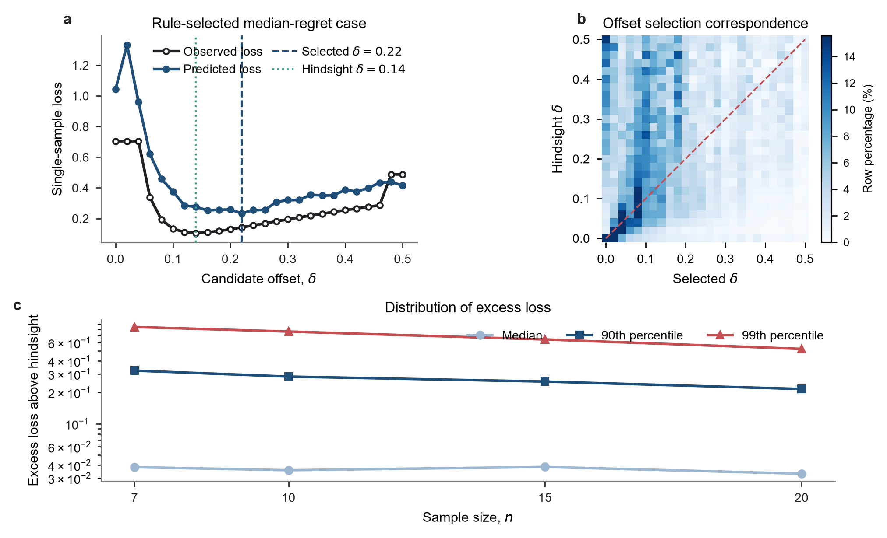
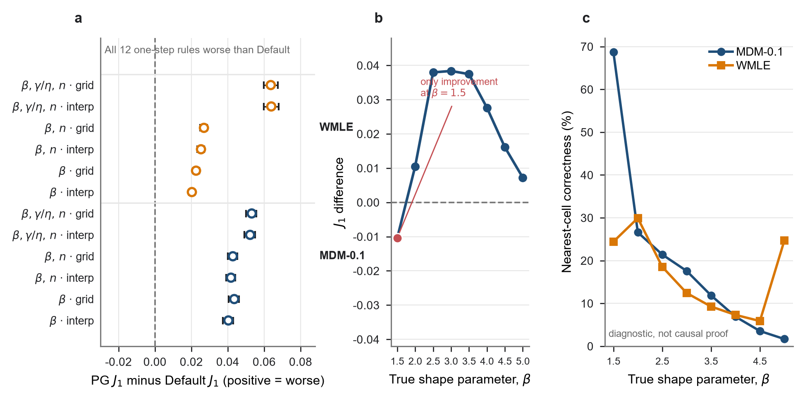
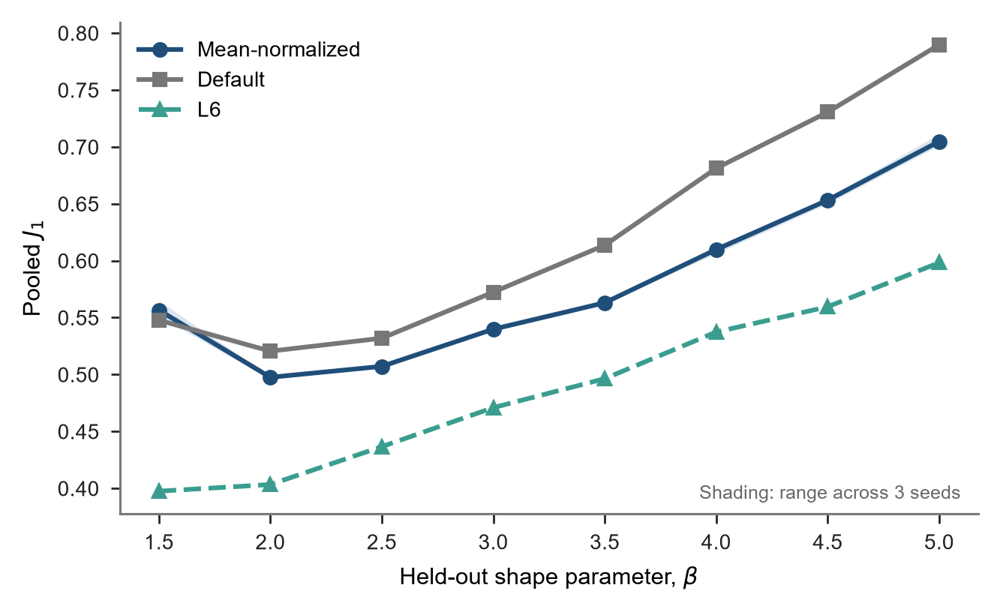
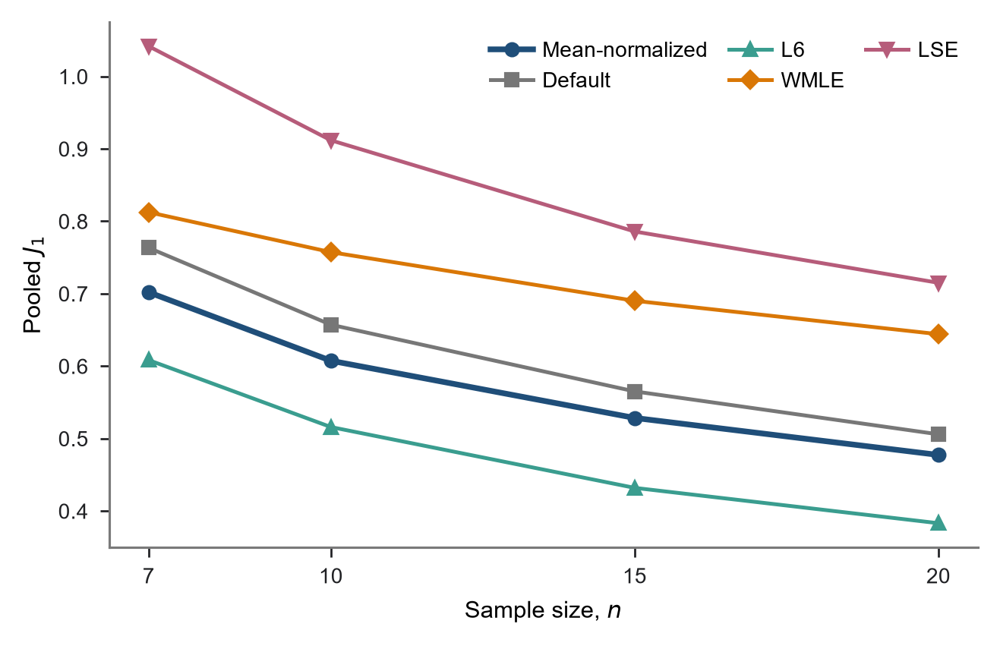
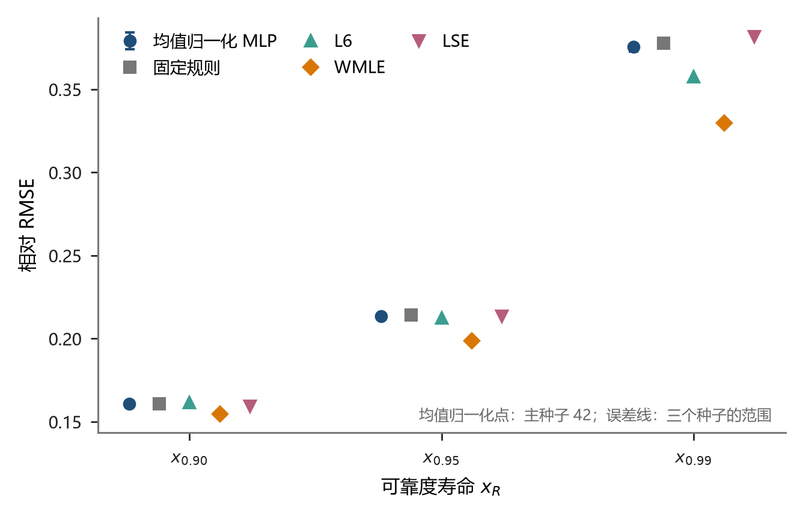
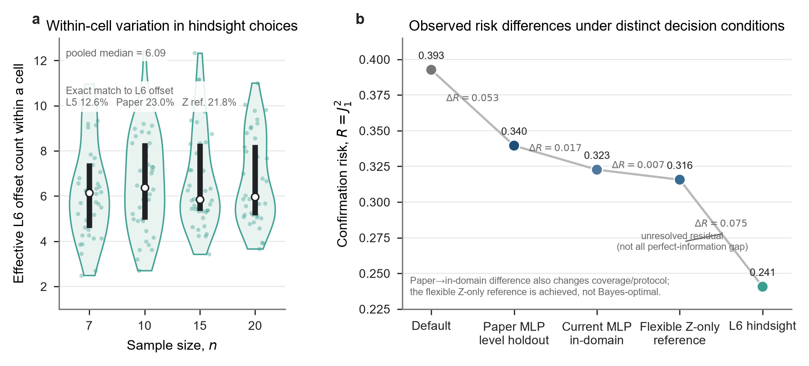
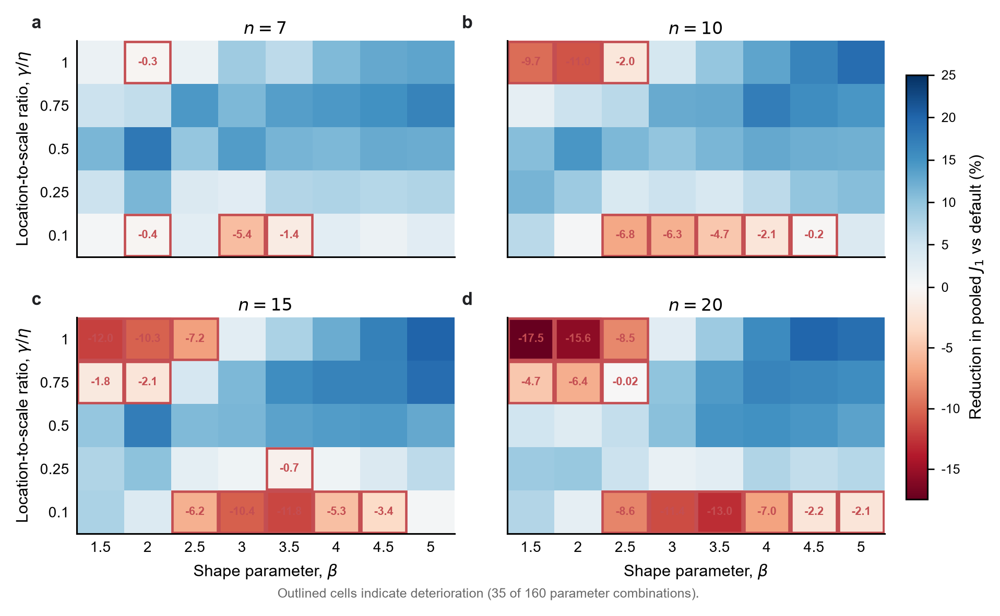
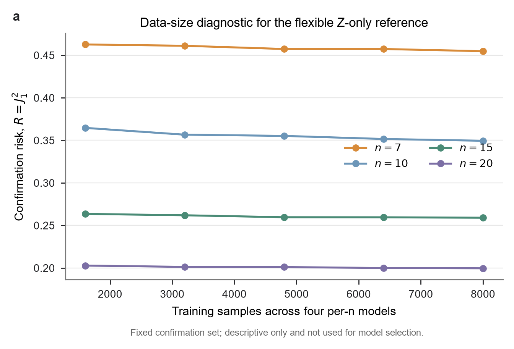

中文修订稿 v1.7，与当前《Study01论文初稿-v1.8.md》配套。正文固定随机种子 42 的折外模型报告主结果，本附录补充初始化敏感性、实验设计、训练细节、完整分层结果、条件风险机制诊断和复现信息。投稿时应按目标期刊格式将“附录”改为“补充材料”或相应栏目。
完整参数设计已列于正文表 1。位置参数由 和五个 水平确定。
样本由三参数 Weibull 分布的逆累积分布变换生成。随机数种子由固定命名空间、参数组合和重复编号共同确定，使同一 (参数组合, repeat_id) 能够重建为同一个样本。各候选偏移量共享同一原始样本，方法之间也使用相同样本键，因而所有比较均为配对比较。
联合损失 和汇总指标 沿用正文第 2.2 节的定义。汇总时每个样本权重相同；160 个参数组合的重复次数相同，因此也等价于组合等权。未收敛结果不作静默删除。训练标签中若某一候选偏移量估计失败，以训练折全部有效损失的第 99 百分位数填充，该惩罚值只由训练折计算。正式均值归一化 MLP、Default 和 L6 均无失败。WMLE 有 1 个样本未收敛，将该次失败的三个估计值记为零后代入联合损失，所得 计入全部样本结果，同时报告失败率。该数值是失败计分约定，不是有效参数估计；完整案例结果另作敏感性参照。
主结果的置信区间使用 300 个重复块进行配对 percentile bootstrap，共 20,000 次重采样。每个重复块在 160 个设计单元中各含一个样本，因此重采样不改变设计单元权重，并始终保留自适应方法与 Default 的同样本配对。另对 160 个设计单元的均值损失进行配对重采样，用于描述结果对当前参数网格构成的敏感性。
两类交叉评价的实施差别列于表 A1。
表 A1 信息层级与神经网络的评价划分。
| 评价对象 | 划分单位 | 训练折用途 | 测试折用途 | 回答的问题 |
|---|---|---|---|---|
| L1 至 L5 | repeat_id 五折 | 确定规则或条件均值损失曲线 | 计算所选规则的损失 | 区分统一取值、样本量规则和参数条件平均风险 |
| 均值归一化 MLP | 每个 的 水平五折留出 | 训练输入标准化、目标标准化和 MLP | 评价未见 水平；每折覆盖全部 8 个 | 样本自适应选择能否用于未参与训练的位置尺度比水平 |
神经网络评价共包含 个折外模型。均值归一化 MLP、Default 和 L6 使用同一测试样本。信息层级与神经网络结果按照各自的评价协议分别报告。
表 A2 参数空间分组定义。
| 信息层级 | 分组依据 | 组数 |
|---|---|---|
| L1 | 全局统一 | 1 |
| L2 | 样本量 | 4 |
| L3 | 形状参数 | 8 |
| L4 | 形状参数 与样本量 | 32 |
| L5 | 完整参数组合 | 160 |
注：各规则在每组训练样本的平均损失曲线上选择偏移量。本表仅定义分组，不表示估计性能。
当前工作稿对应的代码与数据均保存在 Study01 目录。下列路径用于写作阶段核对，投稿时应替换为匿名存档地址或公开仓库地址。
表 A3 写作阶段的复现材料索引。
| 内容 | 当前相对路径 |
|---|---|
| 正式主结果清单 | Study/01-study-MDM最小偏移量优化研究/artifacts/formal/E8_mean_normalized_selector/specialist/manifest.json |
| 正式主结果派生程序 | Study/01-study-MDM最小偏移量优化研究/code/prepare_mean_normalized_main_evidence.py |
| 主结果不确定性 | Study/01-study-MDM最小偏移量优化研究/artifacts/formal/E8_mean_normalized_selector/main_uncertainty/ |
| 不确定性派生程序 | Study/01-study-MDM最小偏移量优化研究/code/analyze_e8_main_uncertainty.py |
| 原始折外预测来源 | E5 均值归一化 60 折模型的封存结果，来源提交和文件哈希见 E8 manifest.json |
| 利用初估参数选择偏移量实验 | Study/01-study-MDM最小偏移量优化研究/artifacts/formal/pg_selector/ |
| 未见 验证 | Study/01-study-MDM最小偏移量优化研究/artifacts/formal/E8_mean_normalized_selector/unseen_beta/ |
| 传统方法参照 | Study/01-study-MDM最小偏移量优化研究/artifacts/formal/E6_dimensional_raw/traditional_ref/ |
| 可靠度寿命 | Study/01-study-MDM最小偏移量优化研究/artifacts/formal/E8_mean_normalized_selector/quantiles/ |
| 尺度等变检查 | Study/01-study-MDM最小偏移量优化研究/artifacts/formal/E8_mean_normalized_selector/scale_equivariance/ |
| 条件风险机制诊断 | Study/01-study-MDM最小偏移量优化研究/artifacts/formal/E10_z_only_benchmark/ |
| L6 候选上边界核查 | Study/01-study-MDM最小偏移量优化研究/artifacts/candidate/E12_delta_upper_boundary/ |
| 绘图代码与派生数据 | figures/scripts/、figures/data/derived/ |
为检查 处仍在下降的损失曲线，对满足 的 2,186 个样本将候选网格延伸至 1.00，其余样本沿用原扫描。延伸后全样本 L6 的 从 0.492297 降至 0.490848，以原网格上的 为基准计算相对降幅，约为 0.29%；相应均方损失 的降幅约为 0.59%。仍有 590 个样本在新上界 1.00 取最小损失。该分析衡量所选右端下降样本对全样本参照的影响；正文保留原定 26 点网格上的 L6。
正文第 2.4 节已经定义网络的输入、输出和偏移量选择过程。表 B1 补充实现所需的训练参数。输入和 26 维目标均只用训练折拟合标准化参数，测试折只执行变换。
表 B1 均值归一化 MLP 的训练设置。
| 项目 | 设置 |
|---|---|
| 网络组织 | 分别训练 |
| 隐藏层 | 256、128、64 |
| 激活函数 | ReLU |
| 优化器 | Adam |
| 初始学习率 | |
| 正则化系数 | |
| 批量大小 | 256 |
| 最大迭代次数 | 300 |
| 提前停止 | 外层训练折中 15% 作内部验证；按验证集多输出 （均匀平均）监测，容差 、连续 20 次迭代无充分改善时停止，并恢复验证得分最高的权重 |
| 随机种子 | 42（正文主结果）；2026、3407（初始化敏感性） |
| 输入表示 | 排序样本除以该样本的算术平均值 |
| 输入标准化 | 归一化后在训练折内逐位置 StandardScaler |
| 目标标准化 | 训练折内 26 维 StandardScaler |
| 训练损失 | 标准化后 26 维预测曲线与实际曲线的平方误差 |
| 预测与选点 | 目标逆标准化后将负值截为零，再对 26 个候选取最小值；平局取较小偏移量 |
正文固定 seed 42 报告该随机种子下的折外主结果。表 B2 另列两个预设随机种子，展示权重初值、训练数据内部验证划分和优化过程改变后的结果。三条预测曲线分别评价，三次训练均无估计失败。
表 B2 三个随机种子的汇总与分样本量结果。
| 随机种子 | 汇总 | 失败率 | ||||
|---|---|---|---|---|---|---|
| 42（主结果） | 0.5846 | 0.7013 | 0.6071 | 0.5294 | 0.4756 | 0% |
| 2026 | 0.5849 | 0.7046 | 0.6041 | 0.5285 | 0.4773 | 0% |
| 3407 | 0.5855 | 0.7000 | 0.6111 | 0.5274 | 0.4792 | 0% |
在相同 160 组合设计、相同折外样本和相同网络配置与评价协议下，额外比较了三种已有的正尺度不变表示：排序样本除以样本均值、样本均方根和样本标准差。三种表示在候选筛选中的汇总 分别为 0.5850、0.5854 和 0.5894。均值与均方根归一化的结果接近；本文选用前者，是因为它在该次筛选中的 略低、定义直接，并已有完整折外模型可供主结果和敏感性核查。这一选择不表明样本均值归一化在其他任务中普遍优于均方根归一化。由于表示筛选与主结果使用同一批折外样本，主结果不构成独立于筛选的最终确认。本文的配对 bootstrap 条件于现有预测，不能消除这一选择效应；固定方案后的新增独立重复确认尚未完成。
作为输入表示的敏感性参照，保留绝对水平的 Dimensional-RAW-MLP 在同一固定 设计下的 为 0.5543，低于归一化方法。这表明绝对水平在该固定尺度任务中具有预测信息，同时也显示了去除这一信息带来的精度代价。论文主方法采用具有正尺度不变性的均值归一化表示。
对样本均值非零的 和正数 ，有 。固定训练得到的标准化器、网络和候选平局处理规则后，预测损失与所选 均不变。进一步，由正文的伪尺度参数定义，
在相同的形状参数搜索区间内，乘以 不改变标准差最小化的形状参数解集；在唯一解或采用等变选解规则时，。可微处满足
因此， 与 同量纲，梯度 及偏移量 均无量纲。位置参数搜索域 随尺度同倍变化， 的边界判据保持不变；对应的精确 MDM 解满足 、 和 。真值同时变换为 时，正文的标准化联合损失也保持不变。
为核查有限数值精度下的实现，选取覆盖 和参数边界与中间水平的 4 个 Monte Carlo 样本，分别运行 、 和 ，共 12 次生产 MDM。所有尺度下的预测损失曲线和所选 一致， 不变， 和 在数值容差内按 倍变化，标准化损失保持一致。
均值归一化后的第 个输入表示第 个次序统计量相对于样本均值的位置，整个向量共同保留样本的相对位置、间距和离散形态。单独置换某一位置会同时破坏排序样本的联合结构，因此输入解释以完整排序向量及其分布形态为对象。
现有结果从表示和决策两个层面解释样本自适应选择。均值、均方根和标准差归一化得到相近结果；有量纲输入表明固定尺度下的绝对水平仍含预测信息；正文第 3.4 节进一步显示，样本实现会改变 MDM 的经验梯度曲线、搜索交点和低风险偏移量。结合 -only 经验参照，这些结果说明当前可观测样本中仍有可利用信息。排序位置的独立贡献和网络参数的统计含义留待专门研究。
正文表 4 的 SD 是混合设计下标准化误差的标准差。令 为参数组合、 为某参数的标准化误差，由全方差公式，
因此不能将汇总 SD 下降等同于所有组合内波动均下降。正文表 4 已按 、 和 分别报告标准化 Bias、SD 和 RMSE。表 B3 在相同评价样本上进一步给出绝对误差中位数、第 95 百分位数和各参数均方误差贡献的降幅，用于观察典型误差与上尾误差，不在正文重复展开。
表 B3 逐参数误差的分布与联合损失贡献。
| 参数 | Default 标准化 RMSE | 自适应标准化 RMSE | 均方误差贡献降幅 | Default 绝对误差中位数 | 自适应绝对误差中位数 | Default P95 | 自适应 P95 |
|---|---|---|---|---|---|---|---|
| 0.4032 | 0.3749 | 13.6% | 0.3140 | 0.2825 | 0.6983 | 0.6825 | |
| 0.3614 | 0.3354 | 13.9% | 0.2659 | 0.2409 | 0.6739 | 0.6504 | |
| 0.3228 | 0.2978 | 14.9% | 0.2225 | 0.2044 | 0.6255 | 0.5935 |
三个参数的绝对误差中位数和第 95 百分位数均有所下降；相应均方误差贡献降幅为 13.6%—14.9%。这些结果补充说明总体改善覆盖典型误差和上尾误差，但不表示每个样本上的三个参数都同步改善。
在固定当前 160 个设计单元及其等权方式下，配对重复块 bootstrap 给出的汇总改善为 7.27%，95% 置信区间为 6.94%—7.64%。按样本量分层后，四组点估计和区间如表 B4 所示。这些区间以固定的 seed 42 选择器和当前设计为条件，反映有限 Monte Carlo 重复带来的不确定性。输入表示与训练初始化的比较见 B.2、B.3；这些比较不构成独立于方法筛选的确认。
表 B4 样本自适应选择相对 Default 的 降幅及配对重复块 bootstrap 95% 置信区间。
| 范围 | 降幅 | 95% 置信区间 |
|---|---|---|
| 全部样本 | 7.27% | 6.94%—7.64% |
| 8.12% | 7.33%—9.00% | |
| 7.62% | 7.24%—8.00% | |
| 6.32% | 5.95%—6.69% | |
| 5.98% | 5.52%—6.44% |
设计单元之间的改善幅度存在明显差异。160 个单元中，125 个的单元 低于 Default，35 个更高；单元相对改善的中位数为 7.40%，四分位区间为 1.39%—12.65%，范围为 。将 160 个单元均值配对重采样时，汇总降幅的 95% 设计构成敏感性范围为 6.04%—8.46%，用于衡量汇总结果随设计单元构成变化的程度。
固定样本量和两组样本 。记参考曲线为 ，曲线差为 ，并选取两条曲线搜索域交集内的一个邻域。若参考交点 和待比较交点 均位于该邻域，令二者之差为 ，一阶展开得
当 且参考斜率非零时，得到正文的一阶交点差。它是两组给定样本曲线之间的局部关系，不要求将随机搜索域外的梯度延拓，也未定义总体平均交点。对边界解、非光滑点、近零斜率或大扰动样本，该近似不适用。本文没有由此推导总体 Bias 或方差；稳定性和估计风险均由实际重复抽样结果评价。
主 seed 的位置尺度比留出评价包含 个模型，每个评价样本只使用未纳入其位置尺度比水平训练的模型。附录的另外两个 seed 用于敏感性核查。这些折外模型的汇总表现不能直接当作一个在全部数据上重训模型的独立测试结果。
应用过程需要针对对应样本量保存的输入标准化器、目标标准化器和网络。若在全部设计数据上重训每个 的最终模型，应固定本附录的表示与训练规则，并另外确认其表现；本文没有将这一步作为已完成的正式主验证。
离线标签扫描包含 48,000 组样本与每组 26 次 MDM 估计，共 1,248,000 次估计。单次应用只需一次网络预测和一次所选偏移量下的 MDM 估计；固定偏移量方案只需一次 MDM 估计。本文尚无在统一软硬件环境下对完整训练与单次推断进行的配对耗时测量，因此不作加速倍数或成本收益阈值的定量主张。
图 B1a 给出一个折外测试样本，其实际损失在 处最低，而网络选择了 。预测曲线识别了实际曲线中的低损失区域，全部测试样本的选择结果与 L6 偏移量存在不同程度的偏离（图 B1b）。网络通过提高低损失区域的选择频率降低了汇总风险。
以所选偏移量的实际损失减去 L6 损失，得到逐样本超额损失。 时，其中位数分别为 0.0383、0.0358、0.0385 和 0.0331；第 99 百分位数为 0.8473、0.7656、0.6431 和 0.5220（图 B1c）。总体改善伴随着明显的样本间差异，超额损失分布仍有较长右尾。

图 B1 从损失曲线预测到偏移量选择。 a， 折外测试样本中的中位超额损失代表例；b， 全部折外预测中所选偏移量与事后最优偏移量的对应分布；每个事后偏移量对应的一行分别归一化为 100%；c， 不同样本量下相对于事后参照的超额损失中位数、第 90 和第 99 百分位数，纵轴为对数尺度。
作为补充探索，本附录检验先估计总体参数、再查询相应条件规则的选择方式。完整实验由两个初始估计量、三个选择族和两种查询方式组成：初始估计量为 MDM-0.1 和 WMLE；PG-beta、PG-beta-n、PG-full 分别使用 、 和 ；查询采用最近网格点或连续插值。单步规则更新一次，迭代规则在偏移量稳定、出现循环或达到 10 次更新时终止。条件均值损失曲线由训练折构造。
表 C1 列出 12 种单步规则及其迭代终止结果。 差按“初估参数选择规则减 Default”计算，正值表示初估参数选择规则误差更高；置信区间采用固定随机种子的配对 repeat-block bootstrap。
表 C1 利用初估参数选择偏移量的完整变体结果。差值为正表示劣于 Default。
| 初始估计 | 选择族 | 映射 | 单步 | 单步差值 | 单步 95% CI | 迭代终止 | 迭代差值 |
|---|---|---|---|---|---|---|---|
| MDM-0.1 | PG-beta | 插值 | 0.6707 | +0.0403 | [0.0372, 0.0429] | 0.6897 | +0.0593 |
| MDM-0.1 | PG-beta | 最近网格 | 0.6740 | +0.0435 | [0.0404, 0.0462] | 0.6866 | +0.0562 |
| MDM-0.1 | PG-beta-n | 插值 | 0.6722 | +0.0417 | [0.0390, 0.0441] | 0.7039 | +0.0735 |
| MDM-0.1 | PG-beta-n | 最近网格 | 0.6732 | +0.0428 | [0.0400, 0.0452] | 0.7011 | +0.0707 |
| MDM-0.1 | PG-full | 插值 | 0.6827 | +0.0523 | [0.0492, 0.0549] | 0.7415 | +0.1110 |
| MDM-0.1 | PG-full | 最近网格 | 0.6836 | +0.0531 | [0.0499, 0.0558] | 0.7320 | +0.1016 |
| WMLE | PG-beta | 插值 | 0.6507 | +0.0203 | [0.0186, 0.0219] | 0.6910 | +0.0606 |
| WMLE | PG-beta | 最近网格 | 0.6530 | +0.0226 | [0.0209, 0.0243] | 0.6898 | +0.0594 |
| WMLE | PG-beta-n | 插值 | 0.6557 | +0.0253 | [0.0233, 0.0271] | 0.7076 | +0.0772 |
| WMLE | PG-beta-n | 最近网格 | 0.6573 | +0.0269 | [0.0249, 0.0287] | 0.7068 | +0.0764 |
| WMLE | PG-full | 插值 | 0.6943 | +0.0639 | [0.0598, 0.0680] | 0.7669 | +0.1365 |
| WMLE | PG-full | 最近网格 | 0.6940 | +0.0636 | [0.0597, 0.0674] | 0.7606 | +0.1302 |

图 C1 利用初估参数选择偏移量的评价。 **a，**12 种单步变体相对 Default 的 差及配对 repeat-block bootstrap 95% 置信区间，正值表示初估参数选择规则误差更高；**b，**最佳单步规则按真 的结果；**c，**MDM-0.1 与 WMLE 初步 落入最近正确 网格单元的比例。面板 c 用于辅助判断初估误差与规则表现的关系。
表 C2 给出最佳单步规则按真 的完整结果。初步 的网格单元正确率与连续插值结果共同用于分析初估误差和规则表现。
表 C2 最佳单步初估参数选择规则按真 的结果。
| 真 | 样本数 | 初估参数选择 | Default | 差值 |
|---|---|---|---|---|
| 1.5 | 6000 | 0.5373 | 0.5477 | -0.0104 |
| 2.0 | 6000 | 0.5310 | 0.5205 | +0.0105 |
| 2.5 | 6000 | 0.5698 | 0.5319 | +0.0380 |
| 3.0 | 6000 | 0.6107 | 0.5724 | +0.0384 |
| 3.5 | 6000 | 0.6511 | 0.6136 | +0.0374 |
| 4.0 | 6000 | 0.7088 | 0.6812 | +0.0276 |
| 4.5 | 6000 | 0.7466 | 0.7305 | +0.0161 |
| 5.0 | 6000 | 0.7970 | 0.7898 | +0.0072 |
补充实验逐一留出 8 个 水平，并用其余 7 个水平训练各样本量网络。表 D1 给出正文主 seed 的各留出水平结果；图 D1 同时标出另外两个 seed 所形成的范围。
表 D1 逐一留出 水平时的汇总 。
| 留出 | 均值归一化 MLP | Default | L6 |
|---|---|---|---|
| 1.5 | 0.5541 | 0.5477 | 0.3975 |
| 2.0 | 0.4962 | 0.5205 | 0.4033 |
| 2.5 | 0.5076 | 0.5319 | 0.4366 |
| 3.0 | 0.5413 | 0.5724 | 0.4709 |
| 3.5 | 0.5626 | 0.6136 | 0.4963 |
| 4.0 | 0.6107 | 0.6812 | 0.5373 |
| 4.5 | 0.6557 | 0.7305 | 0.5595 |
| 5.0 | 0.7113 | 0.7898 | 0.5982 |

图 D1 未见形状参数水平验证。 逐一留出八个 水平时，均值归一化 MLP、Default 和 L6 的 。折线为主 seed 42，蓝色范围表示三个随机种子的取值范围。留出 时自适应方法略差于 Default，其余七个水平保持改善。
该验证覆盖当前八点离散 网格。参数组合中的局部退化和已训练样本量范围见正文第 3.5 节和第 4.4 节。
WMLE 和 LSE 使用与主方法相同的 48,000 个 Monte Carlo 样本。WMLE 为 Cousineau 型加权估计，LSE 为基于对数 Weibull 次序统计量期望的回归估计；二者均约束位置参数非负。数值结果对应归档运行的具体实现，复现应以其来源提交和清单为准，而非替换为其他同名估计器。其完整求解配置和独立参考文献条目还需随投稿代码包一并核定。表 E1 补充正文未展开的三参数 Bias 和 RMSE。
表 E1 WMLE 与 LSE 的参数误差。Bias 与 RMSE 为未标准化的原始参数误差，不能与正文表 4 的标准化数值直接比较；跨方法联合比较使用同一定义的 。
| 方法 | 汇总 | 失败率 | Bias | Bias | Bias | RMSE | RMSE | RMSE |
|---|---|---|---|---|---|---|---|---|
| WMLE | 0.7288 | 0.002% | -0.3505 | -47.6025 | 46.7441 | 1.4180 | 416.5679 | 374.1931 |
| LSE | 0.8725 | 0.000% | -0.0799 | -37.5334 | 32.6643 | 2.1619 | 460.5690 | 419.9131 |

图 E1 传统方法的分样本量参照。 均值归一化 MLP、Default、L6、WMLE 和 LSE 在 下的 。WMLE 的 1 次未收敛保留在全部样本结果中。
可靠度寿命沿用正文第 2.6 节的定义，即 满足 。表 E2 报告正文未逐项列出的相对偏差、相对 RMSE、相对 MAE 和绝对相对误差第 95 百分位数。
表 E2 可靠度寿命的相对误差。
| 方法 | 可靠度寿命 | 相对 Bias | 相对 RMSE | 相对 MAE | P95（绝对相对误差） | 失败率 |
|---|---|---|---|---|---|---|
| 均值归一化 MLP | 0.0223 | 0.1608 | 0.1090 | 0.3198 | 0.000% | |
| 均值归一化 MLP | 0.0527 | 0.2136 | 0.1401 | 0.4180 | 0.000% | |
| 均值归一化 MLP | 0.1405 | 0.3753 | 0.2369 | 0.7337 | 0.000% | |
| Default | 0.0212 | 0.1607 | 0.1094 | 0.3202 | 0.000% | |
| Default | 0.0504 | 0.2142 | 0.1424 | 0.4195 | 0.000% | |
| Default | 0.1320 | 0.3777 | 0.2454 | 0.7284 | 0.000% | |
| L6 | 0.0213 | 0.1613 | 0.1094 | 0.3210 | 0.000% | |
| L6 | 0.0464 | 0.2123 | 0.1395 | 0.4159 | 0.000% | |
| L6 | 0.1138 | 0.3576 | 0.2220 | 0.6924 | 0.000% | |
| WMLE | 0.0130 | 0.1547 | 0.1088 | 0.3052 | 0.002% | |
| WMLE | 0.0186 | 0.1986 | 0.1414 | 0.3879 | 0.002% | |
| WMLE | 0.0361 | 0.3296 | 0.2397 | 0.6347 | 0.002% | |
| LSE | 0.0300 | 0.1594 | 0.1083 | 0.3182 | 0.000% | |
| LSE | 0.0549 | 0.2133 | 0.1418 | 0.4158 | 0.000% | |
| LSE | 0.1144 | 0.3815 | 0.2506 | 0.7330 | 0.000% |

图 E2 可靠度寿命误差。 五种方法在 、 和 上的相对 RMSE。均值归一化 MLP 的点为主 seed 42，误差线表示三个随机种子的取值范围。
令 、。对 在真参数处作局部展开，得到
记上式三个系数组成的向量为 ，参数估计误差的均值和协方差矩阵为 与 ，则在一阶近似适用时，
与参数联合损失相比，寿命误差采用随 和真参数变化的权重，并包含交叉协方差项。因此，逐参数均方误差的下降与某个寿命点的改善可以具有不同幅度。此处展开用于解释两类评价的区别；表 E2 的数值均直接由各样本估计出的寿命计算。
L5 在每个 条件下选择训练样本平均损失最低的偏移量。L6 还知道当前样本在 26 个候选偏移量上的已实现损失，因而是事后选择。只允许使用当前可观测输入 时，理想决策应最小化 ，而不是直接最小化已经揭示的单样本损失。
本实验构造当前设计上的 -only 经验风险参照。160 个设计单元中，repeat 0–159 用于候选拟合，160–199 用于选模；选定回归器后使用 0–199 重新拟合，200–299 作为独立确认集。每个 独立选择回归器，候选包括 Ridge、KNN、ExtraTrees、当前 MLP 结构和较宽 MLP。 选中 ExtraTrees， 选中较宽 MLP。同结构 MLP 对照也使用 0–199 重新拟合。训练器接收 和 26 维 Monte Carlo 损失标签；真参数用于构造标签、L5/L6 参照和事后评分。确认集共含 16,000 个唯一样本，各参数单元均有 100 个独立重复。
表 F1 不同决策条件下的确认集风险。
| 决策条件 | 确认集均方损失 | 信息口径 | |
|---|---|---|---|
| Default | 0.392691 | 0.626651 | 固定 |
| L5 | 0.333483 | 0.577480 | 真参数条件下的平均选择 |
| 论文 MLP | 0.339531 | 0.582693 | 按 水平留出的已实现规则 |
| 同域当前 MLP 结构 | 0.322668 | 0.568039 | 所有当前设计单元参与拟合，确认集独立 |
| 灵活 -only 经验参照 | 0.315658 | 0.561835 | 所有设计单元参与拟合；验证选模后在独立确认集评分 |
| L6 | 0.240646 | 0.490557 | 逐样本已实现 26 点损失全部已知 |
灵活 -only 参照相对论文 MLP 的配对风险差为 ，repeat-block bootstrap 95% 置信区间为 。相对同域当前 MLP 结构的差为 ，95% 置信区间为 。这说明当前 MLP 尚未充分利用当前可观测输入中的信息。论文 MLP 与同域重训结构的差异同时包含参数覆盖、评价协议和重新拟合的变化。
为展示可加的风险差，定义路径中相邻规则 的占比为
分母为当前确认集的 Default–L6 均方损失差 。沿 Default、论文 MLP、同域当前结构、灵活参照、L6 的顺序，四段占比分别为 34.96%、11.09%、4.61% 和 49.34%，合计为 100%。这些数值表示同一风险差距的构成；正文主结果的 7.27% 则以 Default 的 为分母，报告联合误差降幅。最后一段同时包含进一步的模型/数据改进空间和事后完全信息差，现有实验无法将两者分开。

图 F1 不同决策条件下的确认风险。 a， 同一参数单元内 L6 事后偏移量的多样性及三种规则与 L6 的完全一致率分别为 L5 12.6%、论文 MLP 23.0% 和灵活 Z 参照 21.8%；b， 五种决策条件在确认集上的均方损失 。经验参照对应验证集选定规则在独立确认集上的风险；候选规则不依据确认集选优。
在 160 个参数条件中，L5 与 L6 的偏移量完全一致率为 12.56%；论文 MLP 与 L6 为 23.01%；灵活 -only 参照与 L6 为 21.78%。后者的实际风险更低，但与 L6 格点完全一致率略低，说明最佳格点命中率不适合作为损失曲线预测的唯一评价。各参数条件内 L6 有效偏移量候选数的中位数为 6.09，说明同一参数条件内的样本实现会改变事后低风险选择。
为进一步检查 MDM 内部的数值过程，从参数域的四个角点与中心点中预先选取 5 个 位置，并与四个样本量交叉，形成 20 个诊断单元。每个单元使用 repeats 200—299，共 2,000 个确认样本。该分析复用 26 点损失扫描，只为每个样本重建一条
曲线，不训练新模型。单元内 与 L6 偏移量的 Spearman 相关中位数为 0.652（四分位区间 0.549—0.779），19/20 个单元为正。固定 时的 与 L6 偏移量的相关中位数为 （四分位区间 ），20/20 个单元为负。按 的单元内三分位分组后，平均超额损失曲线的最低点依次为 0.10、0.04 和 0.02。L6 的 边界解占 7.1%，固定偏移量下的边界解占 5.75%。这些结果支持样本曲线和交点变化与事后选点相关；边界解占比较低，但本诊断没有定量分解边界切换、曲线形态及其他因素对总体收益的贡献。逐样本指标、单元内相关和条件曲线见 artifacts/formal/E11_profile_mechanism/。

图 F2 参数条件下的效果分布。 各 下由 与 交叉形成的参数单元相对 Default 的 变化。160 个单元中 125 个改善，35 个退化；勾边单元表示退化。该图说明总体改善并不保证每个参数条件都有利。

图 F3 -only 经验参照的数据量诊断。 每个参数条件使用 40、80、120、160 和 200 个拟合 repeat 时，固定确认集上的风险随数据量增加缓慢下降。每条曲线的候选规则已固定，确认集独立用于评价。160 到 200 repeats 的均方损失 降低 0.43%（以 160 repeats 的 为分母），表明当前数据规模下风险仍随训练样本增加而缓慢下降。